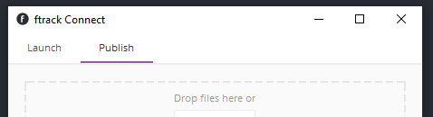
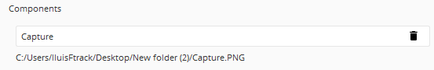
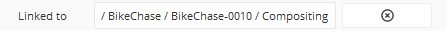
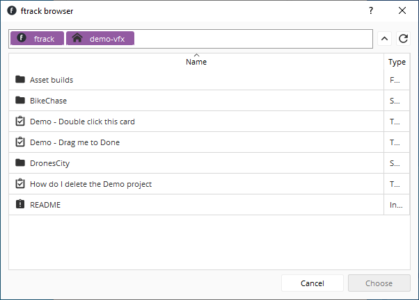
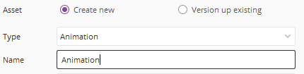
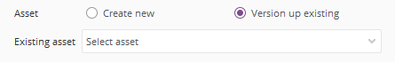
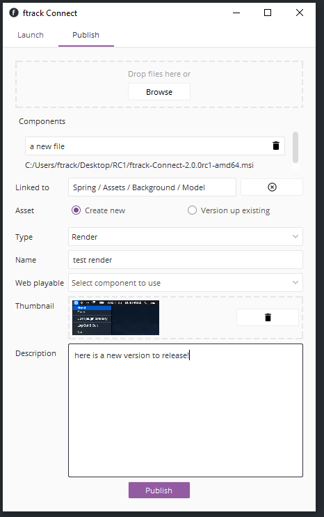
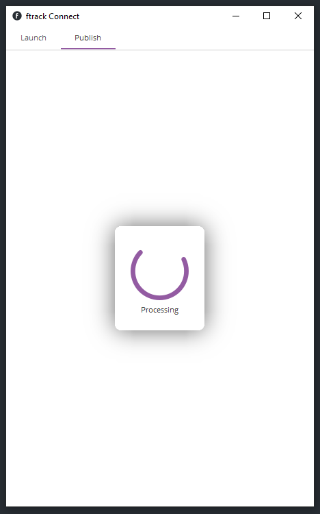
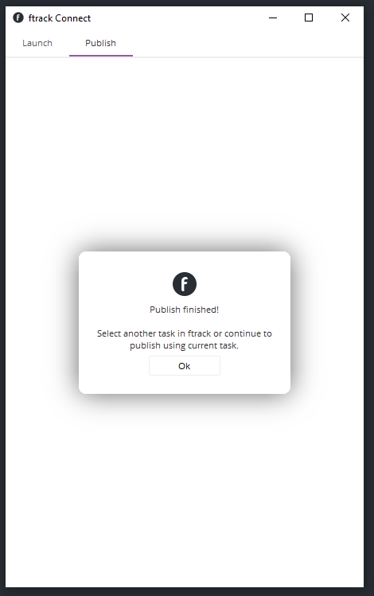

Publishing¶
Connect provides a simple publisher application to support publishing files directly from your computer without the need to open another application (though publishing from within many applications, including from the ftrack web interface, is also supported).
To publish, ensure you have the interface open by selecting Open from the service context menu and then selecting the Publish tab.
Add components¶
Drag and drop files from your computer onto the publisher (or use the Browse button to browse and select files).
Note
Sequences of files will be automatically detected and added as one entry.
Each file will be added as a component with a name based on the filename of the file. You can manually edit the name if desired by clicking in the name of the component and typing a new name.
Components can be removed by clicking the Remove icon next to each entry.
Select a linked entity¶
To change the entity that the publish will be linked to, click the Browse button next to the Linked Entity field.
A browser, similar to the file browser, will appear, but it allows browsing ftrack rather than the filesystem.
You can navigate through a project structure by double clicking on items in the list. A navigation bar at the top will show you where you are and you can also click an item in the navigation bar to jump back up the hierarchy. Alternatively, use the neighbouring Navigate Up tool button to move up a level at a time.
Note
If an item you expect to see in the list is not appearing, try clicking the Reload tool button to refresh the list from the server.
To select the entity to link against, select an item in the list and then click the Choose button. Alternatively, to cancel making any changes click the Cancel button.
Choose or create asset¶
You can now choose if you like to publish a new version of an previously published asset or if you like to publish the first version of a new asset.
To create a new asset, select Create new and fill in the following options.
- Type
The type of asset to publish. Choose from a list retrieved from the connected ftrack server.
- Name
The name of asset to publish. The name and type must be unique when creating new assets.
To publish a new version of an existing asset, select Version up existing instead. In the list which is shown below the radio buttons, select the asset you wish to use.
Fill out remaining fields¶
Fill out the remaining fields in the publisher.
- Web playable
If you want one of the components to be encoded for playing on the web select it in this field from the list of components added.
- Thumbnail
Drag and drop a small thumbnail of the asset onto this field to give others a better indication of what the asset is before opening.
- Description
A brief description of the published asset or the changes made since the last published version.
Publish¶
When ready, press Publish to start the publish. During this time you will see a progress indicator.
Important
Do not quit the service whilst the publish is in progress.
Once completed, the indicator will change to a notification.
